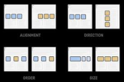

Tirsdag begyndte jeg på css alså den måde ens hjemmeside skal se ud på. FX. at der skal værer en box med noget text eller at baugrunden skal være blå.
Jeg bliv også introduceret til noget der heder Floats og Flexbox der er en måde man kan nemmer dekorer med. 